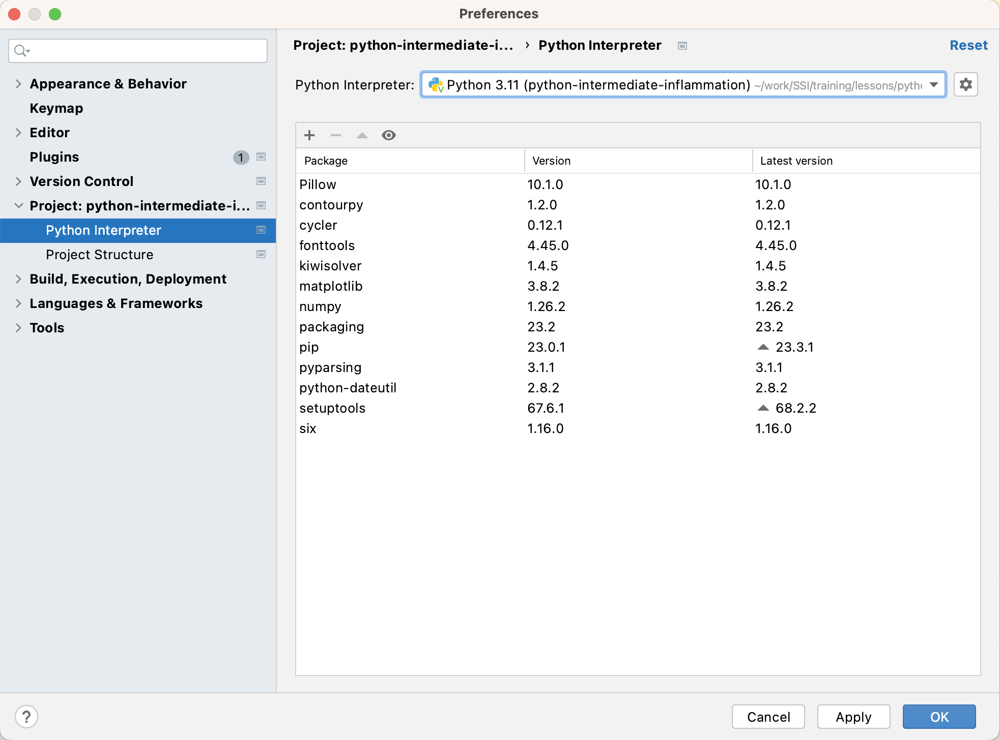
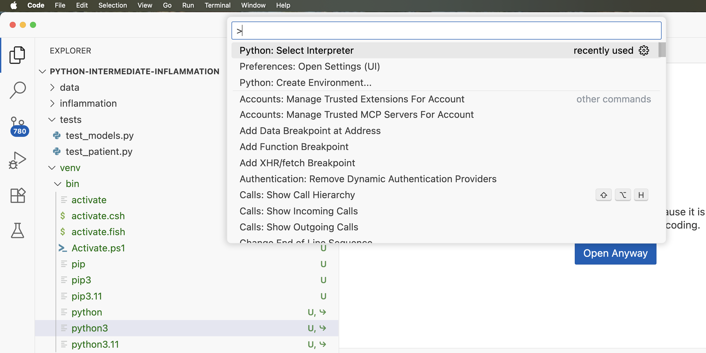
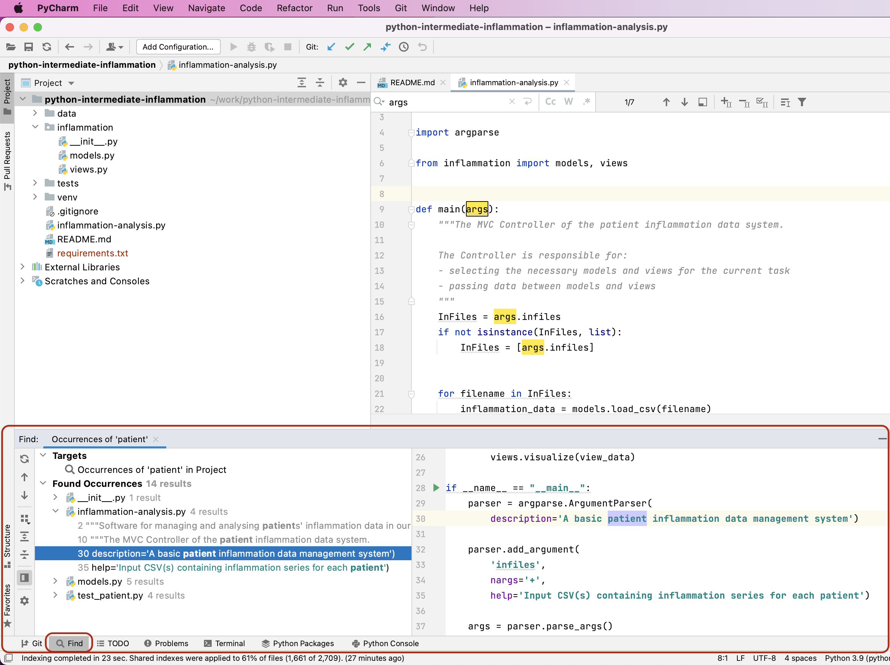
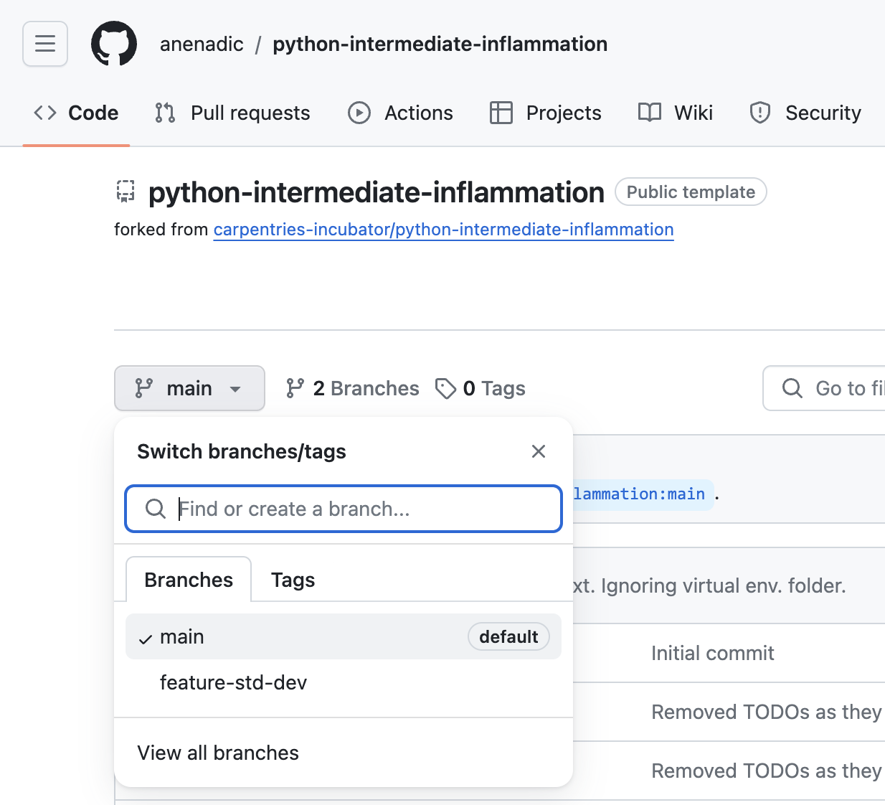
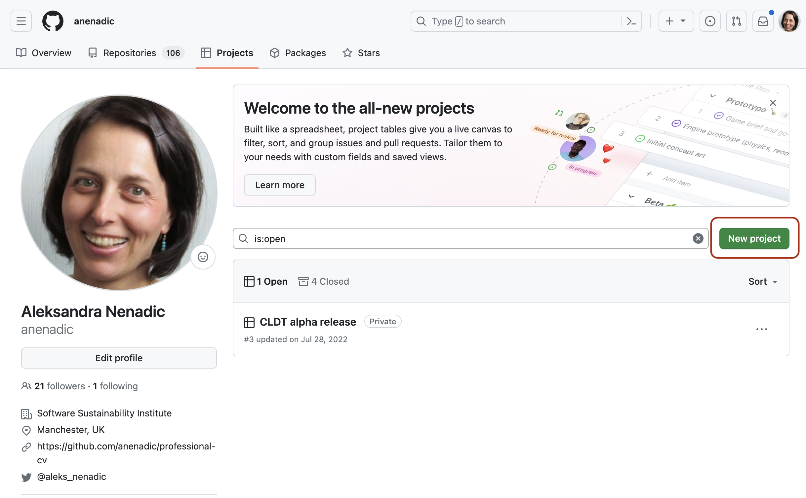
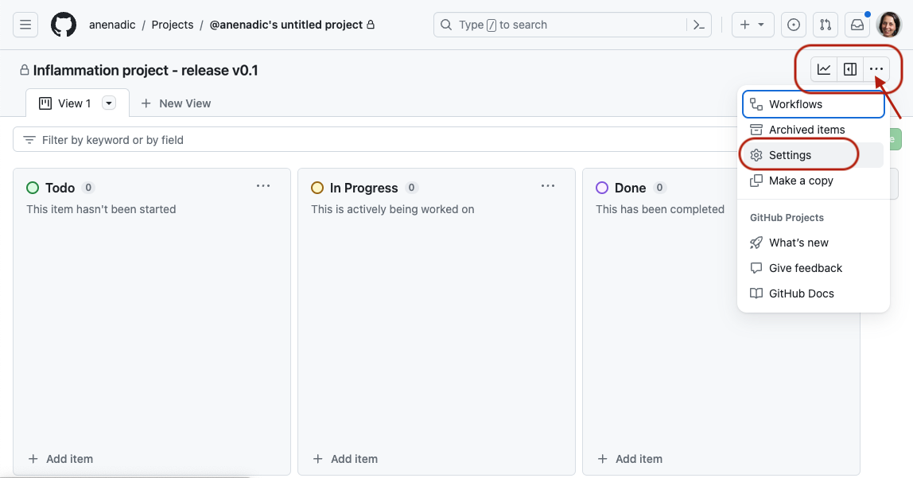
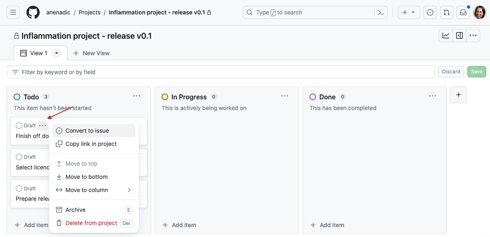

Image 1 of 1: ‘Course overview diagram. Arrows connect the following boxed text in order: 1) Setting up software environment 2) Verifying software correctness 3) Software development as a process 4) Collaborative development for reuse 5) Managing software over its lifetime.’
Image 1 of 1: ‘View of an opened project in PyCharm’
Figure 2
Image 1 of 1: ‘Missing Python Interpreter Warning in PyCharm’
Figure 3
Image 1 of 1: ‘Welcome screen in VS Code’
Figure 4
Image 1 of 1: ‘View of an opened project in VS Code’
Figure 5
Image 1 of 1: ‘VS Code Extensions marketplace for searching and installing extensions’
Figure 6
Image 1 of 1: ‘Configuring Python Interpreter in PyCharm’
Select Virtualenv Environment from the list on the left
and ensure that Existing environment checkbox is selected
within the popup window. In the Interpreter field point to
the Python 3 executable inside your virtual environment’s
bin directory (make sure you navigate to it and select it
from the file browser rather than just accept the default offered by
PyCharm). Note that there is also an option to create a new virtual
environment, but we are not using that option as we want to reuse the
one we created from the command line in the previous episode.
Figure 7
Image 1 of 1: ‘Packages Currently Installed in a Virtual Environment in PyCharm’

Figure 8
Image 1 of 1: ‘Select python interpreter in VS Code’

Figure 9
Image 1 of 1: ‘Set interpreter path in VS Code’
Figure 10
Image 1 of 1: ‘Showing interpreter status in VS Code status bar’
Figure 11
Image 1 of 1: ‘Installing a package in PyCharm’
Select the + icon at the top of the window. In the
window that appears, search for the name of the library
(pytest), select it from the list, then select
Install Package. Once it finishes installing, you can close
that window.
Figure 12
Image 1 of 1: ‘Installing a package in VS Code’
Figure 13
Image 1 of 1: ‘Adding a Run Configuration in PyCharm’
Select Add new run configuration... then
Python.
Figure 14
Image 1 of 1: ‘Run Configuration Popup in PyCharm’
In the new popup window, in the Script path field
select the folder button and find and select
inflammation-analysis.py. This tells PyCharm which script
to run (i.e. what the main entry point to our application is).
Figure 15
Image 1 of 1: ‘Settings editor in VS Code’
Figure 16
Image 1 of 1: ‘Run and Debug View in VS Code showing the option to create a new launch (run and debug) configuration’
Figure 17
Image 1 of 1: ‘Syntax Highlighting Functionality in PyCharm’
Figure 18
Image 1 of 1: ‘Syntax Highlighting Functionality in VS Code’
Figure 19
Image 1 of 1: ‘Code Completion Functionality in PyCharm’
Figure 20
Image 1 of 1: ‘Code Completion Functionality in VS Code’
Figure 21
Image 1 of 1: ‘Code References Functionality in PyCharm’
Figure 22
Image 1 of 1: ‘Code References Functionality in PyCharm’
Figure 23
Image 1 of 1: ‘Code Search Functionality in PyCharm’
Figure 24
Image 1 of 1: ‘Code Search Functionality in PyCharm’

Figure 25
Image 1 of 1: ‘Search menu in VS Code’
Figure 26
Image 1 of 1: ‘Search for a string functionality in VS Code’
Figure 27
Image 1 of 1: ‘Search results window in VS Code with further filtering functionalities’
Figure 28
Image 1 of 1: ‘Code search option in VS Code’
Figure 29
Image 1 of 1: ‘Version Control Functionality in PyCharm’
Figure 30
Image 1 of 1: ‘Version Control Functionality in VS Code’
Image 1 of 1: ‘Development lifecycle with Git. Four parts of Git infrastructure are represented: working tree, staging area, local repository and remote repository, and alongside this various git commands. git add is shown moving files from working tree to staging area. git commit is shown moving files from staging area to local repository. git push is shown moving files from local repository to remote repository and git fetch from remote repository to local repository. git checkout and git merge are both shown as moving files from local repository to working tree. git pull, a shortcut for git fetch followed by git checkout / merge, is shown moving files from remote repository to working tree.’
Software development lifecycle with Git
Figure 2
Image 1 of 1: ‘Representation of Git's distributed version control system showing interactions between a central repository and two local repositories on developer machines, with arrows showing pushing from central repository to developer repositories, pulling from developer repositories to central repository. A self-connecting arrow on developer repository shows creating commits in local repository.’
Figure 3
Image 1 of 1: ‘Git commit tree showing four branches - Main, Develop, FeatureX and FeatureY. The Main branch shows three commits corresponding to release tags v0.1, v0.2 and v0.3. The Develop branch branches off from Main branch with intermediate commits between release tags which are then merged into Main branch. Short-lived feature branches FeatureX and FeatureY branch off from Develop branch, have a small number of additional commits and are then merged back in to Develop branch.’
Figure 4
Image 1 of 1: ‘Code tab of GitHub web interface showing main branch of software project. Branch selector dropdown is shown with main (default) branch showing as currently selected and one other branch feature-std-dev showing as present.’

Software project’s main branch
Figure 5
Image 1 of 1: ‘Code tab of GitHub web interface showing notification indicating develop branch had recent pushes. Branch selector dropdown is shown with main (default) branch showing as currently selected and two other branches develop and feature-std-dev showing as present, with develop highlighted.’
Create a new pull request by clicking the green
New pull request button.
Figure 3
Image 1 of 1: ‘Creating a new pull request.’
Click Create pull request button to open the request.
Figure 4
Image 1 of 1: ‘Submitting a pull request.’
Add a comment describing the nature of the changes, and then submit
the pull request by clicking the Create pull request button
(in the new window).
Figure 5
Image 1 of 1: ‘Adding a collaborator in GitHub’
Figure 6
Image 1 of 1: ‘The files changed tab of a pull request’
Locate up the pull request from the GitHub’s
Pull Requests tab on the home page of your fellow learner’s
software repository, then head to the Files changed tab on
the pull request.
Figure 7
Image 1 of 1: ‘Adding a review comment to a pull request’
When you find a line that you want to add a comment to, click on
the blue plus (+) button next to the line. This will bring up a “Write”
box to add your comment. You can
also add comments referring to multiple lines by clicking the plus and
dragging down over the relevant lines. If you want to make a concrete
suggestion or a change to the code directly, such as renaming a
variable, you can click the Add a suggestion button (which
looks like a document with a plus and a minus in it). This will populate
the comment with the existing code, and you can edit it to be what you
think the code should be.
Figure 8
Image 1 of 1: ‘Adding a suggestion to a pull request’
Note: you can only make direct code suggestions
if you are a collaborator on a repository. Otherwise, you can add
comments only. GitHub will then provide a button for the code author to
apply your changes directly.
Figure 9
Image 1 of 1: ‘Using the finishing your review dialog’
To do this, click the Finish your review button at the
top of the Files changed tab. In the comment box, you can add any other comments that
are not associated with a specific line. For example, you can put the
list of tests that you want to see added here.
Figure 10
Image 1 of 1: ‘Using the finishing your review dialog’
Next you will need select to one of Comment,
Approve or Request changes.
Figure 11
Image 1 of 2: ‘Responding to a review comment with an emoji’
Image 2 of 2: ‘Responding to a review comment with a link to commit’
You understand and agree with the reviewer’s comments. In this
scenario, you should make the requested change to your branch (or accept
the suggested change by the reviewer) and commit it. It might be helpful
to add a thumbs up reaction to the comment, so the reviewer knows you
have addressed it. Even better, leave a comment such as “Fixed via
#commit_number” with a link to your commit that implemented the change.
Figure 12
Image 1 of 1: ‘Merging a pull request in GitHub’
Once the reviewer approves the changes, the person whose repository
it is can merge the changes onto the base branch. Typically, it is the
code author’s responsibility to merge but this may differ from team to
team. In our case, you will merge the changes on the PR on your
repository.
Image 1 of 1: ‘Referencing comments and commits in GitHub’
Figure 4
Image 1 of 1: ‘Adding a new project board in GitHub’

Figure 5
Image 1 of 1: ‘Selecting a project board template in GitHub’
Roadmap - suitable for a high-level visualisation of your project
over time.
Regardless of which project type/view you select, you can easily switch
to a different project layout later on.
Figure 6
Image 1 of 2: ‘Project board setting in GitHub’
Image 2 of 2: ‘Adding project description and metadata in GitHub’
After it is created, you should also populate the description of
the project from the project’s Settings, which can be found by clicking
the ... button in the top right corner of the project. 
After adding a description, select Save.
Figure 7
Image 1 of 1: ‘Default card board in GitHub’
Figure 8
Image 1 of 1: ‘Adding issues and notes to a project board in GitHub’
Figure 9
Image 1 of 1: ‘Converting a task to issue’

Figure 10
Image 1 of 1: ‘Add another project view’
Finally, you can change the way you view your project by adding
another view. For example, we can add a Table view to our Board view by
clicking the New button and selecting it from the drop down
menu.


![Development lifecycle with Git. Four parts of Git infrastructure are represented: working tree, staging area, local repository and remote repository, and alongside this various git commands. git add is shown moving files from working tree to staging area. git commit is shown moving files from staging area to local repository. git push is shown moving files from local repository to remote repository and git fetch from remote repository to local repository. git checkout and git merge are both shown as moving files from local repository to working tree. git pull, a shortcut for git fetch followed by git checkout / merge, is shown moving files from remote repository to working tree.](fig/git-lifecycle.svg)


 You can
also add comments referring to multiple lines by clicking the plus and
dragging down over the relevant lines. If you want to make a concrete
suggestion or a change to the code directly, such as renaming a
variable, you can click the
You can
also add comments referring to multiple lines by clicking the plus and
dragging down over the relevant lines. If you want to make a concrete
suggestion or a change to the code directly, such as renaming a
variable, you can click the  GitHub will then provide a button for the code author to
apply your changes directly.
GitHub will then provide a button for the code author to
apply your changes directly. In the comment box, you can add any other comments that
are not associated with a specific line. For example, you can put the
list of tests that you want to see added here.
In the comment box, you can add any other comments that
are not associated with a specific line. For example, you can put the
list of tests that you want to see added here.


 Regardless of which project type/view you select, you can easily switch
to a different project layout later on.
Regardless of which project type/view you select, you can easily switch
to a different project layout later on. After adding a description, select
After adding a description, select